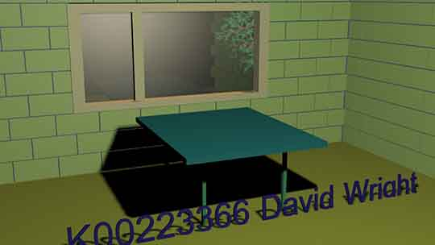
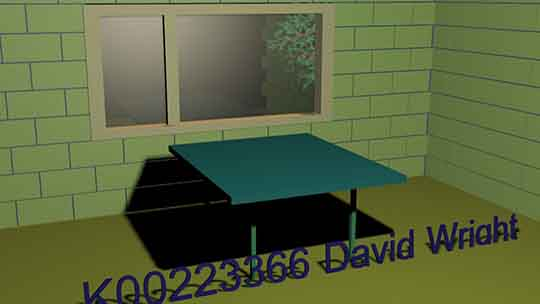

Creative Multimedia Programming
The aim of this webpage is to work on search engine optimisation techniques. Through scaling image sizes, using Google analytics, wording meta tags carefully.
Refreshing the content is important too. Here's a logo I designed last semester:
3DSMax graphics work
 

Creative Multimedia Programming in Limerick Institute of Technology.
The course is a level 8 higher diploma. It covers web design using html, css, javascript, jquery. It then explores PHP and XML too. The visual side of things used Adobe Illustrator, Adobe Photoshop and Axure.
My first site spoke about the new fusion energy plant in France. I drew this diagram with some limited knowledge of Adobe Illustrator, it can be seen in more detail here.